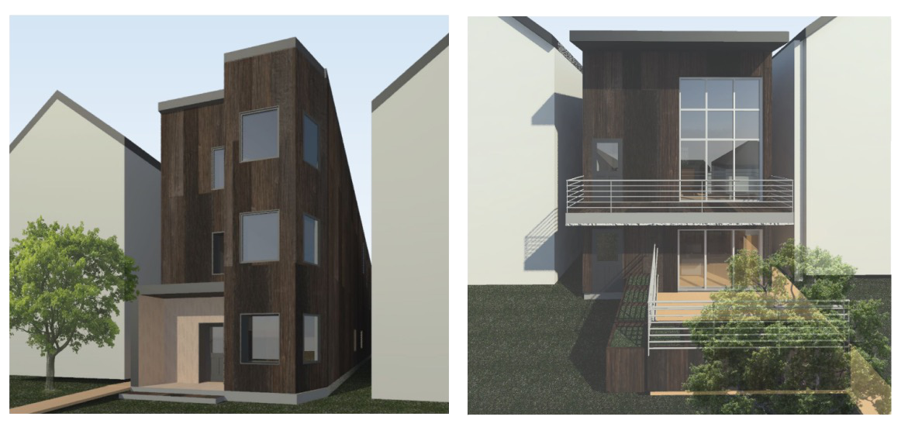
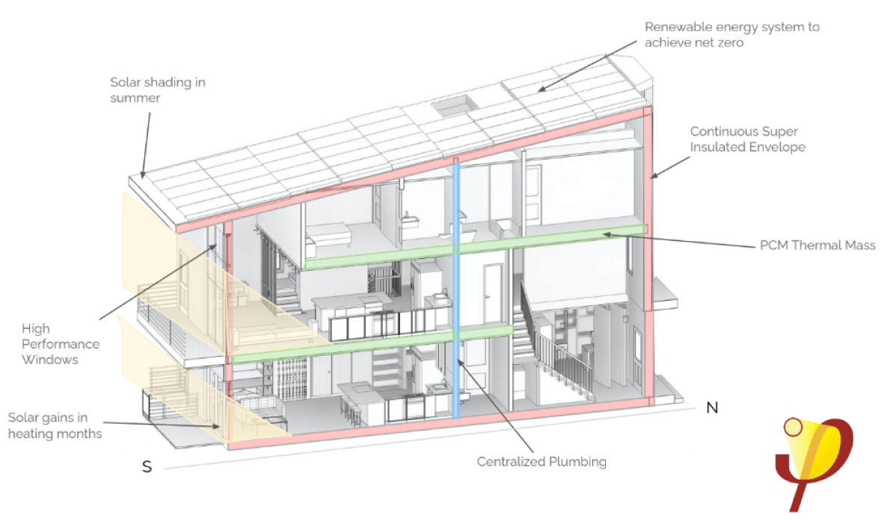
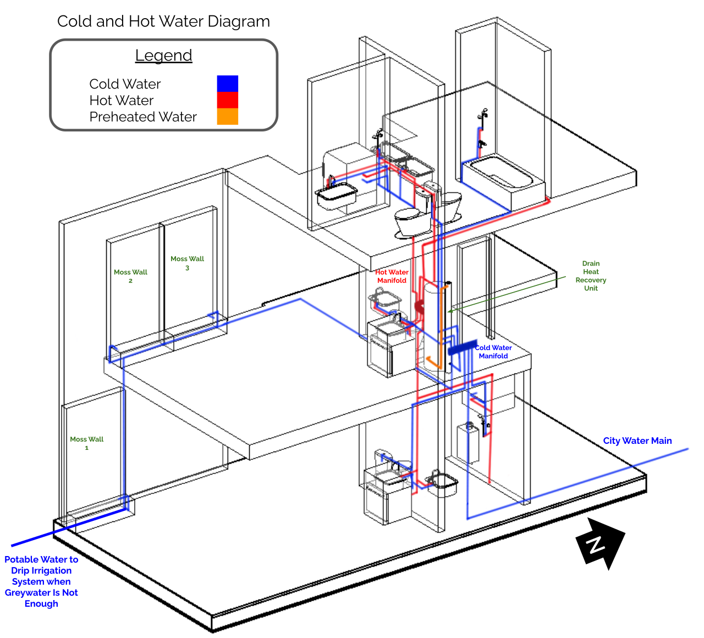

LEED AP BD+C B.S. Mechanical Engineering (Robotics)
Minor in Environmental Engineering
Segal Design Certificate
Northwestern 2023
NUHome
Net Zero Single Family Home
Problem:
Current house designs in Chicago, especially those for single family homes, are not geared toward sustainability and have large environmental footprints from construction to its day-to-day operations.

Solution:
NUHome is a future-proof and adaptable residence that balances comfort and efficiency for families in different stages of life.

My Roles:
As the water systems designer for NUHome, I collaborated with the engineering and architecture team to design a centralized “water core” where all of the plumbing of the home resides. Some features of the water system include:
Ultra low flow fixtures to decrease water usage
Efficient electric water heater to provide hot water with the same amount of energy as an incandescent light bulb
Greywater recycling to reuse water from both showers and sinks for landscape and toilet water

Results:
Grand Winner of 2021 Solar Decathlon Build Design Challenge
1st Place Team in Urban Single Family Home Category